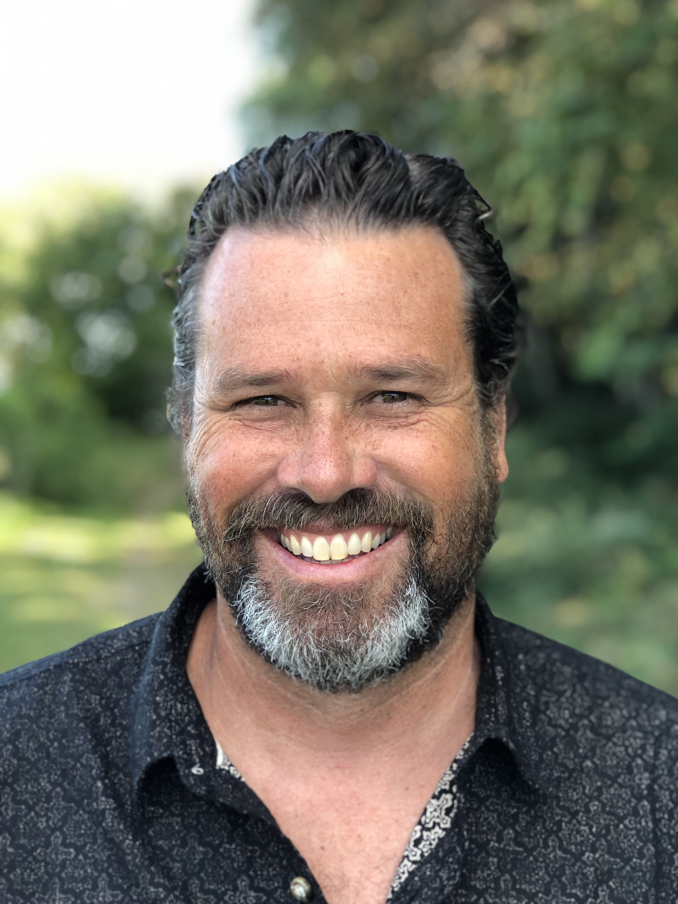
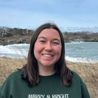
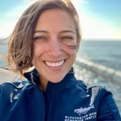

The Vollmer Lab
Current members and alumni of the Vollmer Lab at FAU.
Principal Investigator

Principal Investigator
PhD, Harvard University
Evolutionary biologist specializing in the genomics of non-model marine organisms. Research focuses on coral disease resistance, immunology, and coral-pathogen interactions at the molecular and organismal level. Uses field and tank experiments combined with genomics to unravel complex interactions between the coral animal host, its algal symbionts, and numerous microbes.
Director, School of Environmental, Coastal, and Ocean Sustainability & Professor, Department of Biological Sciences, Florida Atlantic University.
Current Graduate Students

PhD Student
BS, University of California, San Diego · Northeastern University
Identifying coral pathogens and mutualists using coral-microbial filtration, manipulation, and metagenomic techniques. Joined 2022.
PhD Student
BS, Cornell University · Northeastern University
Characterizing the pathogens associated with Stony Coral Tissue Loss Disease. Joined 2023.

PhD Student
MS, Florida Atlantic University · Northeastern University & Gloucester Marine Genomics Institute
Researching the genomics of coral thermal tolerance, speciation, and hybridization.
Alumni
Dr. Jason Selwyn
NSF Postdoctoral Researcher · PhD, Texas A&M Corpus Christi
Computational biologist focused on genomic signatures of coral disease resistance.
Dr. Brecia Despard 2020–2025
PhD, Northeastern University
Thesis: "Characterization of small RNAs, miRNA targets, miRNA-mediated gene silencing pathways and their interaction with White Band Disease resistance in Staghorn coral Acropora cervicornis"
Dr. Stefan Kaluziak 2011–2020
Thesis: "A Genomics Perspective on the Evolution of Caribbean Acroporid Corals" · Currently: Research Scientist, Massachusetts General Hospital
Dr. Charles Roesel 2013–2018
Thesis: "NGS Profiling of Invertebrate Immune Systems" · Currently: Senior Application Scientist, Dotmatics
Dr. Rebecca Certner 2012–2017
Thesis: "Microbial Ecology and Genetic Mechanisms of Virulence and Pathogenicity in White Band Disease Infected Staghorn Corals" · Currently: Management and Program Analyst, NOAA
Dr. Sarah Gignoux-Wolfsohn 2011–2016
Thesis: "Towards A Better Understanding of White Band Disease: Transmission, Causes, and Effects" · Currently: Assistant Professor, UMass Lowell
Dr. Elizabeth Hemond 2008–2014
Thesis: "The genetic architecture of Caribbean Acroporid corals" · Currently: Assistant Professor, Bahçeşehir University, Istanbul
Dr. Silvia Libro 2007–2014
Thesis: "Genetic bases of immunity and disease resistance to White Band Disease in the staghorn coral Acropora cervicornis" · Currently: Laboratory Manager, Northeastern University
Dr. David Combosch 2007–2014
Thesis: "Evolution in isolation - the genetic basis of the Tropical Eastern Pacific's ecologically dominant reef builder Pocillopora damicornis" · Currently: Associate Professor, University of Guam
MS in Marine Biology
Gaylord Noblitt (2008–2009) · Carmel Norman (2008–2009) · Allison Kerwin (2009–2010) · Christopher Marks (2009–2010) · Steve Doo (2009–2010) · Courtney Rudd (2009–2010) · Jennifer Davidson (2012–2014) · Steven Heck (2012–2014) · Michelle Chen (2017–2018) · Colleen Shortal (2022–2023) · Allison Shupp (2024–2025)
MS in Bioinformatics
Melisa Brown (2015–2016) · Josh Bohannan (2015–2016) · Verena Chung (2015–2016) · Umesh Kathad (2015–2016) · Patrick Choi (2015–2017) · Dillon Hawley (2015–2017) · Himanshu Chintalapudi (2016–2017) · Paulmar Joseph (2015–2017) · Sia Charan Penikalapati (2016–2017) · Sherry Williford (2015–2017) · Sachin Lohar (2017–2019)
Amanda Ciardi (2007–2008) · Bailey Clear (2007–2008) · Christopher Camara (2008–2009) · Cathy Roney (2008–2009) · Kevin Greene (2009–2010, Matz Fellow) · Lisa Wolff (2009–2010) · Steven Munnelly (2010–2011) · Kara Wiggins (2012–2014) · Sam Csik (2013–2015) · Allison Shupp (2021–2022) · Miles Vollmer (2021–2022) · Caileigh Pierce (2022–2023) · Veronica Rajotte (2023, Barrett Fellow) · Anna Eaton (2023, Barrett Fellow) · Sonia Cho (2024, Barrett Fellow) · Zachary Anderson (2024, Barrett Fellow) · Natalie Dudko (2025, Barrett Fellow) · Maithili Ubgade (2025, Barrett Fellow)